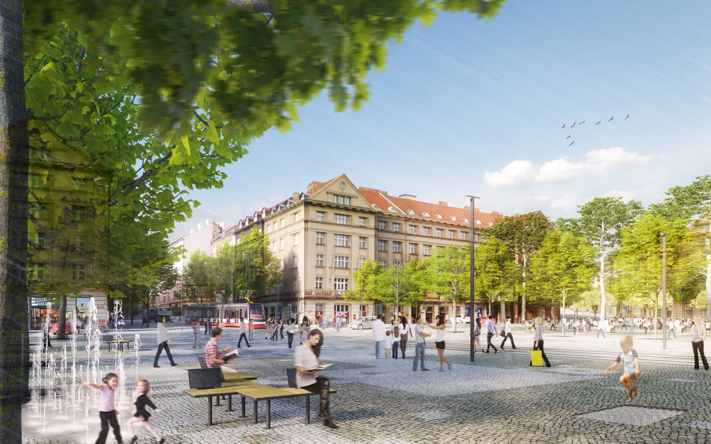
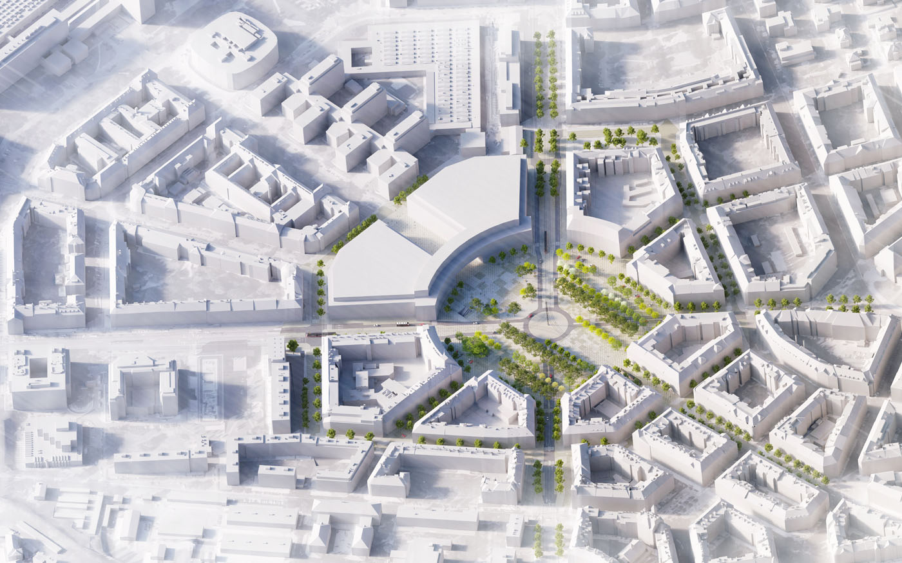
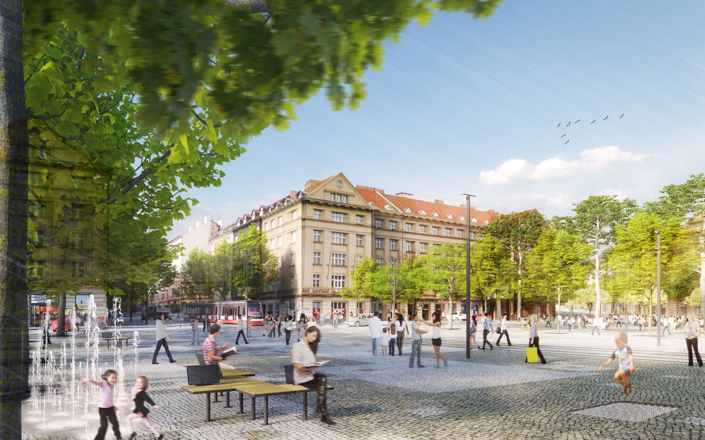
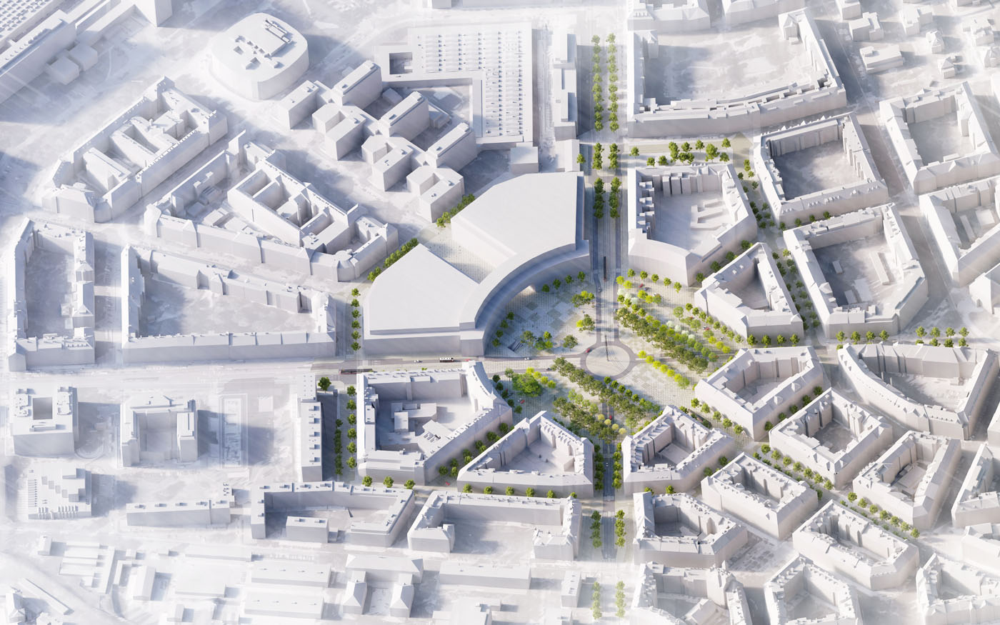

-
 
 -


Vítězné náměstí
„MOZAIKA“ DĚJŮ, SETKÁNÍ, SPOLEČNOSTI, PROSTŘEDÍ, KULTURY, MĚSTA
Vítězné náměstí je dopravním, ekonomickým, kulturním i symbolickým středem Prahy 6 a jeho forma musí být úměrná významu. Veškeré změny jsou provedeny se snahou posílit tyto aspekty a zároveň maximalizovat veřejný prostor využívaný místními obyvateli i návštěvníky. Podstatu řešení problému Vítězného náměstí vidíme v transformaci nevhodné křižovatky v kvalitní veřejný prostor odpovídající jeho lokálnímu i celopražskému významu. Optimalizace automobilové dopravy a především zlepšení dopravy tramvajové posiluje původní hlavní urbanistickou osu Dejvická – Technická, která je nyní zcela popřena. Přítomnost tramvajové tratě v Dejvické ulici chápeme jako jeden z nejdůležitějších městotvorných prvků náměstí.
Návrh respektuje plán Antonína Engela a přirozeným způsobem na něj navazuje. Využívá autentické materiálové řešení a rozvíjí ho ve volné citaci, která rozvíjí původní principy, ale aplikuje je na vyjímečné měřítko a tvarosloví místa. Doplňujícím kompozičním prvkem původního návrhu je sloup ze subtilní příhradové konstrukce, který soudobým způsobem navazuje na Engelovu kon- cepci a zároveň se stává nosným prvkem pro vedení tramvajových trolejí a umístění osvětlení, jasně definuje orientaci prostoru. Obvod náměstí je povrchy a zelení formován do různých atmosfér, což pomáhá orientaci v prostoru.
Veřejný prostor se díky optimalizované dopravě mnohonásobně zvětšil. Dopravní řešení přirozeně dělí náměstí na kvadranty s různým charakterem, které odpovídají převažujícím funkcím přilehlých budov:
- kvadrant s městským charakterem je k Dejvické
- reprezentativní charakter k Buzulucké, kde je zachován a kompozičně podpořen stávající památník a předprostor generálního štábu
- rekreační charakter k Verdunské
- společensko-kulturní charakter k Technické
Každá funkce se propisuje do charakteru povrchu, městského mobiliáře i samotné nálady místa. Okolní ulice náměstí, především Československé Armády a Svatovítská budou přeměněny na živoucí bulváry se stromořadími.
Popis dopravního řešení
Základní premisou zvoleného dopravního řešení je vytvoření přehledného prostranství místo frag- mentovaného. Tato fragmentace je způsobena především přebujelým dopravním řešením. Dílčí plánované snížení kapacity pro automobilový provoz dovoluje výraznou redukci parametrů i plochy, včetně menšího množství jízdních pruhů v prostoru náměstí. Kruhový objezd je redukován pouze na jeden širší pruh a poloměr okružní křižovatky zmenšen na 26m. Dle konzultací s dopravními spe- cialisty by toto řešení při (relativním) oddálení pěších (bezmotorových) křížení vozovek od okružního pásu nemělo představovat zhoršení plynulosti oproti současnému stavu, resp. bez vážného narušení předkládaného konceptu lze i nadále zachovat dva jízdní pruhy na okružním pásu (se zmenšeným poloměrem oproti dnešnímu stavu). Obslužné komunikace po obvodu náměstí jsou systémově změněny takovým způsobem, aby:
- • nedocházelo k bypassu kruhového objezdu
- • bylo velmi rychlé a jednoduché se z kapacitní dopravy dostat k obchodům a poté opět vyjet na kapacitní ulice
- • ulice tvořily jednotný systém ve všech kvadrantech
- • obyvatelé okolních ulic nebyli zatěžováni tranzitní dopravou.
Snaha návrhu je ponechat stávající množství parkování, avšak v jiné konfiguraci. Vnitřní plocha náměstí by primárně neměla sloužit ke kapacitnímu parkování, ale převážně parkování návštěvnickému. V okolních ulicích, zvláště pak v Šolínově ulici, se navyšuje množství rezidenčních parkovacích stání. Další parkovací místa doporučujeme ve spolupráci se soukromým sektorem umístit v rámci uvažovaných investic do podzemních garáží.
Tramvajová doprava je v tomto návrhu chápána jako nejdůležitější městotvorný prvek náměstí. Klíčem k požadované proměně náměstí se ukázalo být přemístění tramvajové tratě z ulice Svatovít- ská do ulice Dejvická. Tímto přesunem zastávek se zlepší obslužnost území, jak v místě samotného náměstí, tak i v území mezi Dejvicemi a Hradčanskou. V ústí ulic při náměstí jsou umístěny 3 zastávky tramvaje, což umožňuje celou plochu účelněji obsloužit. Přesun tramvajové tratě podmiňuje celá řada dalších investic od přípravy ulice Dejvická po zahloubení “buštěhradské dráhy” v úseku Hradčanská - Veleslavín. Jsme ovšem přesvědčeni, že toto řešení je z hlediska respektu k dejvick- ému urbanismu, městu i jeho obyvatelům krok správným směrem a lze jej dlouhodobě etapizovat.
V návrhu se počítá s postupným utlumováním autobusové dopravy. Stanoviště je umístěno na konci ulice Evropské, v úzkém napojení na tramvajovou stanicí i vstupy do metra.
Na dopravně vytížených komunikacích v řešeném území jsou navrženy vyhrazené jízdní pruhy pro cyklisty. Jednosměrné komunikace jsou vždy pro cyklisty průjezdné v obou směrech. Celý systém cyklodopravy funguje i v rámci ostatních radiál vedoucích z náměstí. Pohyb ve chráněném standardu, resp. sdíleném prostoru je umožněn usměrněně obousměrně po celém obvodu náměstí, resp. plošně v rámci přehledných zpevněných ploch v rámci plochy náměstí, včetně křížení hlavních komunikací společně s chodci.
Zvolené dopravní řešení má podporovat bezpečný, přehledný a svobodný pohyb chodců, který se odehrává ve dvou režimech pohybu:
- • po obvodu kolem parteru budov s použitím přechodů při ústí do ulic
- • v rámci zkrácení distancí různými trajektoriemi s použitím vnitřních přechodů
Popis navrhovaného materiálového řešení
Přestože redukujeme plochy vyhrazené pro tranzitní automobilovou dopravu, musí docházet k dělení plochy náměstí komunikacemi a tramvajovými pásy, což není žádoucí pro veřejný prostor. Chceme náměstí stmelit, nikoliv štěpit a vytvářet další ostrůvky a bariéry. V celé ploše používáme pražskou mozaiku jako pochozí plochu pro chodce. Štípané žulové kostky se k Vítěznému náměstí hodí, zároveň s nimi lze pracovat i současným způsobem. Vzor dláždění vychází z klasických vzorů pražské mozaiky (např.sedmdesátka s dámou) a jeho základ tvoří rastr 3x3m. Uplatňují klasické vzory mozaiky. Do středu náměstí se přetváří v tušenou expresivní citaci, která pomáhá místo ukotvit v extrémním měřítku prostoru. Obslužné komunikace dláždíme štípanými žulovými kostkami inverzní barevnosti, které umožňují pojíždění motorových vozidel. Kapacitní komunikace jsou řešeny asfaltovým povrchem.
Materiálové řešení v rámci mřížky náměstí lze cenově optimalizovat. Plochu štípané dlažby lze dle funkční plochy nahradit jinými povrchy tak, aby ctily celkovou koncepci, např. mlat, betonová prefabrikovaná dlažba s různými povrchovými úpravami, trávník, extenzivní plochy zeleně. Důležité je udržet celkovou kvalitu prostoru jak v površích tak detailu.
Zeleň
Hlavní urbanistická osa Dejvická-Technická je společně s ortogonálním rastrem dláždění vých- odiskem pro uspořádání stromů. Stromy jako celek vytvářejí “druhou koncepční vrstvu” nad plo- chou dlažby, do které se vepisuje lineární artikulace zeleně podporující hlavní osu a mírně vedlejší potlačující osy automobilové dopravy. Řešení též pomáhá orientaci v prostoru.
Druhová skladba vychází z požadavku, aby stromy tvořily příjemný stín pro pobyt osob, zdůrazňovaly hlavní osu a v některých případech vytvářely intimnější zóny. Konfigurace stromů vytváří použitím vysokokmenů otevřená a přehledná prostranství na jedné straně, na druhé straně naopak tvoří použitím nižších dřevin intimnější partie a hustší lokální stín. Před budovami po obvodu celého náměstí vysazujeme dřezovec trojtrnný (Gleditsia triacanthos). V kvadrantu před univerzitním kam- pusem přerušujeme pevnější “aleje” vycházející od původní zástavby kolem Dejvické tř. a vytváříme skupiny stromů, aby ve středu vznikla plocha pro společenské akce. V maximální možné míře se snažíme zachovat stávající dřeviny v souladu s dendrologickými průzkumem, tak aby odpovídaly formě náměstí.
Městský mobiliář
Stejně jako u dlažby se i v městském mobiliáři propisuje přechod od klasické formy k uvolněné citaci. K tomu se nabízí po obvodu využít “pražskou lavičku”, která se formou vhodně váže na stávající zástavbu. Do středu náměstí a ke kampusu přechází ve čtvercový systém laviček a odpočinkových prvků na bázi pixelů, který lze vhodně akcentovat ve vazbě na dlažbu. Na náměstí dále rozmísťujeme vodní a herní prvky, prolézačky, trampolíny nejen pro děti, stojany na kola, koše atd. Jejich přesné rozmístění a definice bude řešena v další fázi projetku. Stožáry osvětlení mají jednoduché tvarosloví s vazbou k celkové formě prostoru.
Etapizace
Optimalizace dopravního řešení, která umožňuje využít prostor jako náměstí a ne jen jako dopravní křižovatku využívá princip kvadrantů v rámci etapizace. Revitalizaci lze tedy velmi efektivně etapizovat a nevyžaduje zásadní úpravy technické infrastruktury v rámci plochy náměstí. Práce lze tedy i v rámci časové koordinace s vývojem celé oblasti rozdělit na základní díly dle kvadrantů a dalších dílčích úprav a má mnoho různých scénářů.Primárně lze etapizovat na tyto základní celky:
- Kruhový objezd - Jednotlivé automobilové a tramvajové dopravní větve:
- Svatovítská (případné odstranění tramvaje)
- Evropská
- Jug. partyzánů
- Čs. Armády
- Dejvická-Hradčanská - nová tramvajová trať Kvadranty - plochy veřejného prostoru:
- Buzulucká - rekonstrukce okolí památníku čs. legionářů, přeložení čtvercových pamětních desek do nového povrchu.
- Technická - v tomto prostoru lze dle potřeby provozovat současnou autobusovou točnu a rekonstrukci volně umístit v čase v návaznosti na novou výstavbu
- Verdunská - rekreační zóna
- Dejvická
Systém dopravního řešení je navíc navržen tak, že propustnost náměstí lze jednoduše optimalizovat dle aktuálních potřeb.
| Klient | Institut Plánování a Rozvoje hl. města Prahy |
| Lokace | Praha 6 – Dejvice, Česká republika |
| Typologie | veřejné prostranství - náměstí |
| Typ | veřejný prostor |
| Rok | 2018 |
| Status | soutěž – otevřená |
| Náklady | 550 000 000 Kč |
| Autoři | MgA. Filip Kosek, MgA. Jan Říčný, Ing. arch. Jakub Jirman, MgA. Jarin Krouz |
| Spoluautoři | Bc. Petr Müller |
| Spolupráce | doprava: Tomáš Cach krajinářská architektura: Anna Lochmanová |